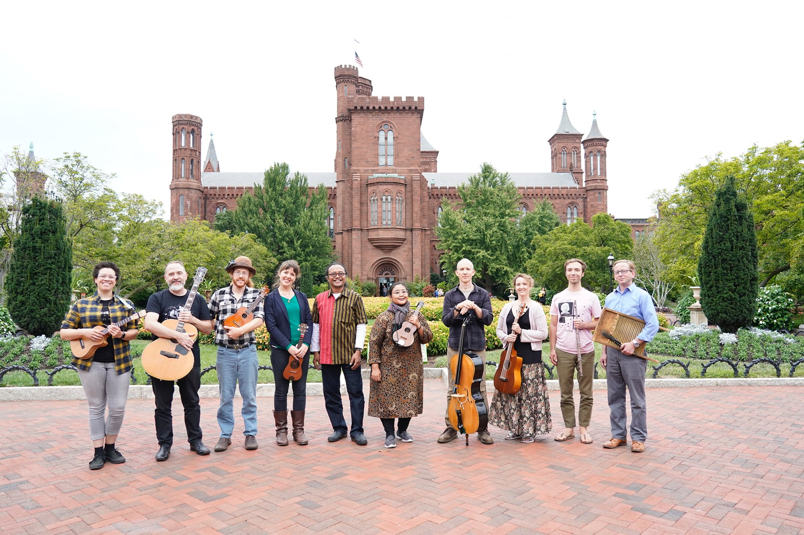
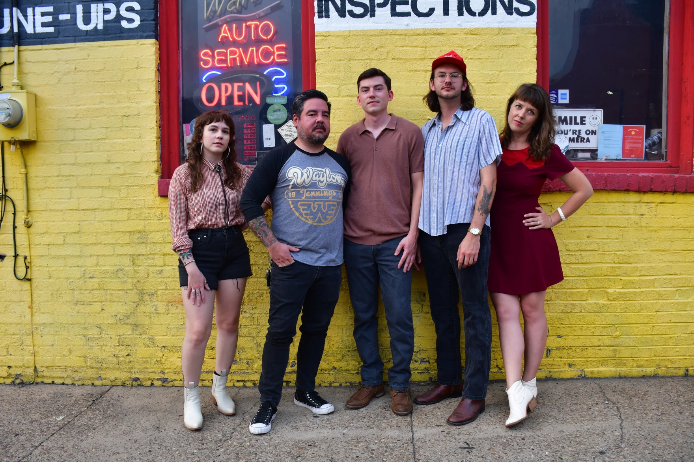
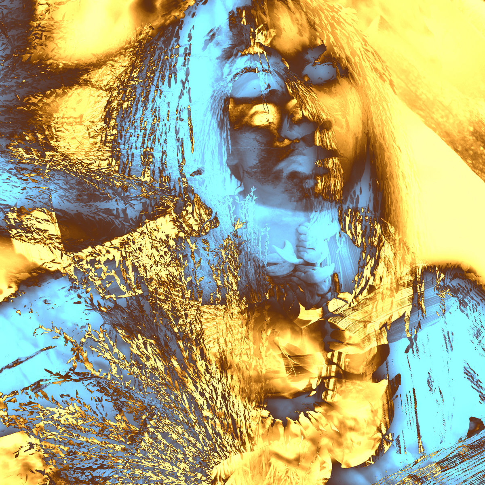
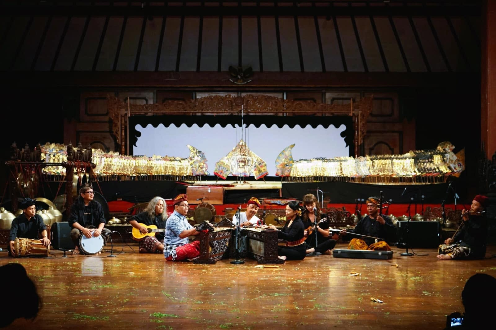
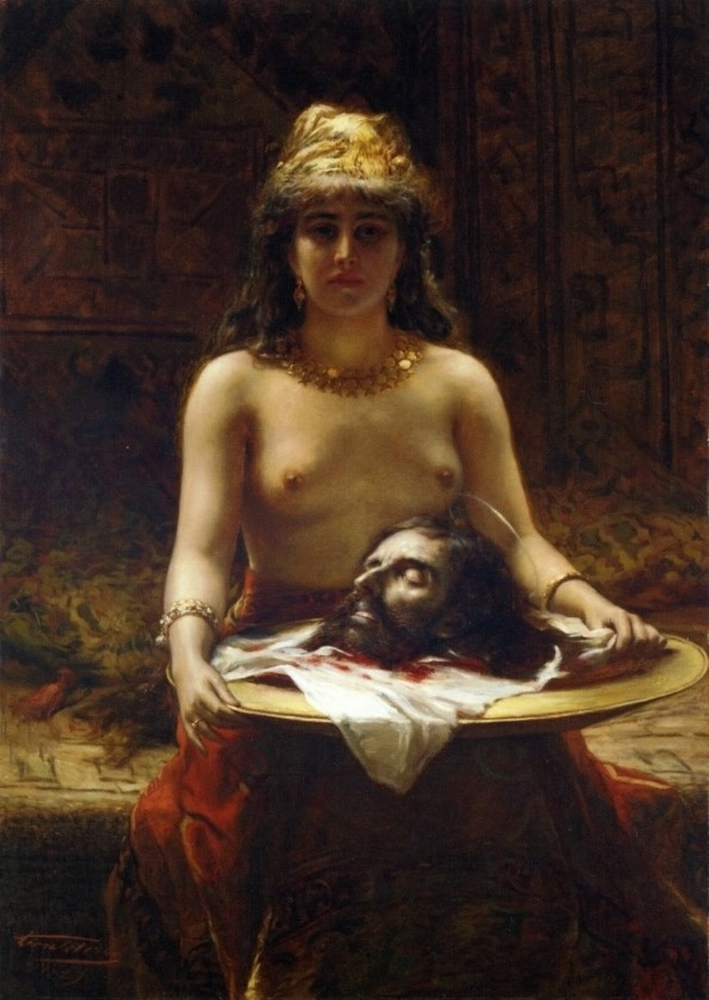
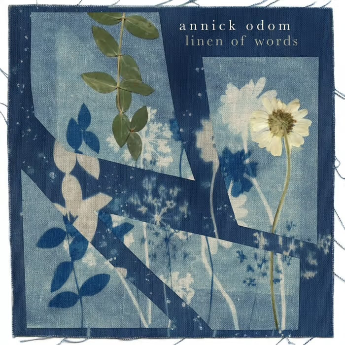
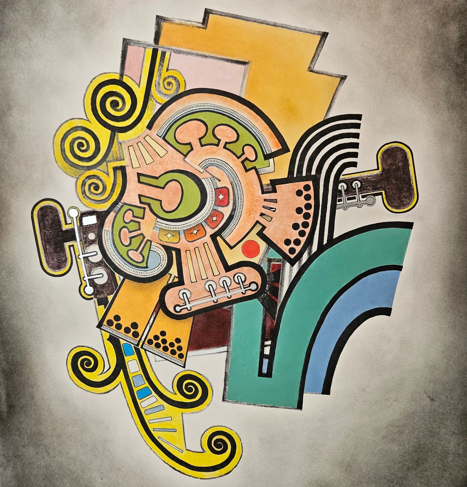

Music
- All
- Personal
- Collaborations
{kind=link}
WAKE ROBIN
Wake Robin is a newly-formed folk group featuring Hannah Standiford, Judy Swanson, and Annick Odom. The band draws from old-time traditions, the folk revival, early bluegrass, and their own original songwriting woven together with close harmonies. Recent appearances include Meadville Summer Solstice Festival, Millvale Music Festival, Confluence Creative Arts Center, Jerry Run Summer Theater, Birdfish Brewing's Wintergrass, Acoustic Music Works, Government Center in Pittsburgh, the West Virginia Botanic Garden, The Ferry House in Morgantown, and venues throughout Pennsylvania, West Virginia, and Ohio.

{kind=link}
RUMPUT
Rumput performs innovative stringband music and shadow theater. Rumput often collaborates with teachers in Indonesia, from whom they have studied kroncong (Indonesian stringband music) and wayang kulit (shadow theater). Their past performances include a co-production of Shadow Ballads (2016), an intensively collaborative performance involving old-time music duo Anna & Elizabeth, Balinese wayang (shadow-puppet) master Gusti Sudarta, and Javanese musicians Peni Candrarini and Danis Sugiyanto. In 2019, Rumput collaborated with Danis and singer Endah Laras on a mini-tour of mid-Atlantic venues including stops at The Smithsonian Institution and The Richmond Folk Festival.

SOLO RELEASE
In 2024 Hannah Standiford released an EP called For the Birds of original music. This release features old-time instruments (Hannah Standiford- banjo, Annick Odom- upright bass, Megan Williams-fiddle) and was recorded live by Galen Clark.

{kind=link}
HOWLING MOB
Howling Mob is a Pittsburgh-based honky tonk band known for electric-infused old-time sounds and gritty harmonies. The name originates from an 1877 Harper's magazine description of angry striking workers in Pittsburgh, a local labor uprising also explored by the public history project The Howling Mob Society.

{kind=link}
PENI CANDRA RINI
Peni Candra Rini is a renowned Javanese singer, educator, and composer fusing Javanese poetry with contemporary composition for Indonesian and Western instruments. Her New Amsterdam release Wani is full of playful noise, rambunctious energy, and a deep sense of the unexpected. Hannah played cak, an Indonesian stringed instrument, for this release.

{kind=link}
Sono Seni Ensemble
The Sono Seni Ensemble is a musicians' lab, dedicated to collaboration and experimentation in the creation of new works. Since July 1998, the Surakarta-based ensemble has worked intensively in creating new works from new perspectives. Hannah collaborated with Sono Seni Ensemble in 2023, collaborating on pieces by founding member and composer I Wayan Sadra and creating original works for the group such as “Telephone” linked below.

ONEBEAT GHANA
OneBeat Ghana brought together 11 young leading musician entrepreneurs from Ghana, Nigeria, and the United States to build strategies for stronger local artist communities and creative economies in the region. Led in collaboration with Black Girls Glow Founder Poetra Asantewa, musicians gathered for a two week intensive residency at the Stone Lodge in Osoduku and in Accra, incubating new ideas for locally based festivals, creative exchanges, community workshops, projects for cultural preservation and more. And during off hours and late night jam sessions, the group wrote and recorded furiously. The OneBeat Ghana Mixtape compiles 9 of these genre-bending tracks crafted during the residency, from hip hop to hiplife, afropop, techno, folk and beyond. OneBeat Ghana is an initiative of the U.S. Department of State’s Bureau of Educational and Cultural Affairs (ECA) and produced by Bang on a Can’s Found Sound Nation with additional support from U.S. Embassy Ghana and the U.S. Embassy in Nigeria.

{kind=link}
RAIC (Richmond Avant Improv Collective)
The Richmond Avant Improv Collective (RAIC) is an experimental music group founded in Richmond, Virginia, in September 2015. The group focuses on spontaneous composition, live group interaction, and large ensemble dynamics without overdubs. Hannah collaborated as a vocalist for their album Il Delirio E La Mortalita Di Amore.

{kind=link}
ANNICK ODOM
Annick Odom’s album Linen of Words is a kaleidoscopic collection of original songs and reworked traditional ballads, shaped by over 20 musicians from a wide range of musical backgrounds, including folk, jazz, classical, and experimental music. Hannah appears as a vocalist and banjoist on several tracks including “How Can I Keep From Singing” and “Bow and Balance.”

{kind=link}
PAUL WILLSON
Paul Willson is a composer and multi-instrumentalist based in Richmond, VA who has released seven albums, three double-albums and two recent EPs. Hannah has collaborated with Paul for almost 20 years, recently crafting harmonies for several of his recordings including “The Frontier Song” on The Ears and the Music as well as “Pass the Buck” on a forthcoming album.